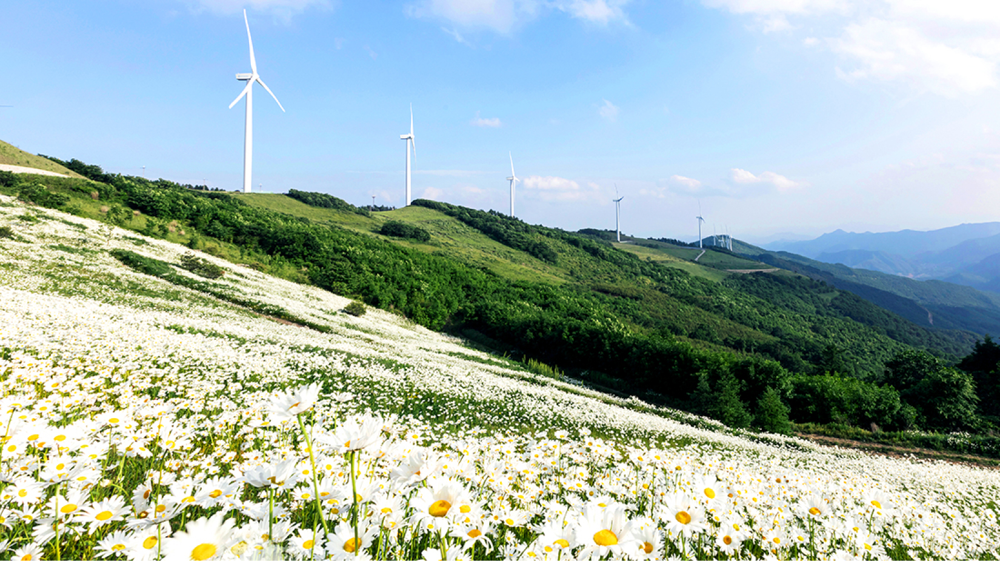
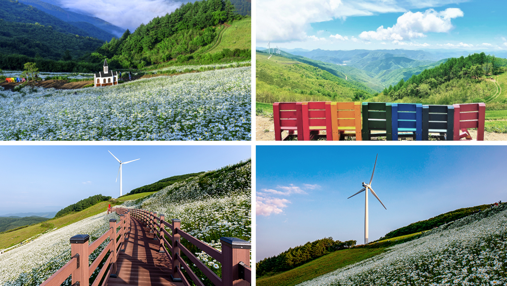

'샤스타데이지' 천상의 화원
평창 미탄면에 위치한 청옥산 육백마지기는 볍씨 육백 말을 뿌릴 수 있을 정도로 넓은 평원이라 하여 붙여진 지명이다. 축구장 여섯 개 정도를 합쳐 놓은 넓은 초원으로 이미 많은 사람들에게는 평창 여행의 명소로 손꼽히고 있다.
굽이굽이 굽어진 산길을 따라 차를 타고 올라가다 보면 능선을 따라 풍력발전기가 보이기 시작한다. 이렇게 가까이서 발전기를 볼 수 있는 것만으로 신기한 경험을 할 수 있다. 발전기가 하나 둘 보이기 시작하면 점점 하늘로 올라가는 기분이 드는데, 비행기를 타서 바라보는 하늘과는 또 다른 느낌이다. 파란 하늘에 가까워지고 구름은 손에 잡힐 듯이 내려앉은 것 같다. 올라가는 길의 풍경만으로도 설레는 시간이다.
육백마지기의 가장 아름다운 시기를 꼽자면 6월에서 7월이 아닐까 싶다. 이맘때 이 넓은 초원은 ‘샤스타데이지’가 만개하여 마치 꿈속에서 본듯한 꽃 밭에 와있는 느낌을 준다. 초원을 가득 채운 데이지 꽃은 바라보는 것만으로도 푸르고 생기 있는 생명의 기운으로 가득 찬 느낌이다. 일명 ‘계란 프라이 꽃’으로 불리는 ‘샤스타데이지’는 화려하진 않아도 초원 전체에 넓고 가득히 피어서 장관을 만들어낸다.

카메라를 들고 여기저기 사진을 찍다 보면 명당이 아닌 곳이 없을 정도로 주변을 둘러싼 산세와 평창의 맑은 하늘이 이뤄내는 아름다운 풍경은 눈으로 바라보며 마음에 한 번 담고, 다시 또 사진으로 남겨 추억으로 한 번 더 담아본다. 이 계절 육백마지기를 방문한다면 모든 사람들에게 인생 사진 한 장쯤은 손에 쥐게 될 것이라고 자신할 수 있다.
실제로 굽은 길 때문에 방문이 힘들지만 이미 많은 사람들이 육백마지기의 아름다운 풍경을 보기 위해 방문한다. 황홀한 풍경에서의 웨딩 촬영을 위해 오는 사람부터 산속에 둘러싸여 아름답게 지는 노을, 깨끗한 밤 하늘의 별을 보기 위해서 방문하는 사람들까지 최근에는 ‘차크닉’이나 ‘차박’을 하기 위한 방문도 꾸준히 늘어가고 있다.
푸른 초원에 핀 꽃들에 한 번 반했다면 이제 하늘을 바라볼 차례이다. 그림같이 수려한 산세와 그 위에 걸려있는 구름들이 장관이다. 꽤나 넓은 초원을 걷는 내내 여기저기 둘러볼 때마다 감탄이 나온다. 뜨거운 햇볕이 내리쬐는 곳을 걷다가 덥다고 느껴질 때쯤 시원하고 깨끗한 바람이 불어 더위를 식혀준다. 곳곳에 위치하고 있는 풍력 발전기는 거대한 크기를 자랑하며 바람의 속도에 맞춰 천천히 돌아가고 있고, 그저 풍경을 바라보는 것만으로도 열심히 굽은 길을 뚫고 온 것을 보상받는 기분이다.